about me
hello! i'm jasper. my pronouns are xie/xem/xyr, they/them, and it/its.
i make code, art, and languages, sometimes.
everything i code is FOSS. i usually license under GNU licenses (i.e., AGPL, GPL, LGPL).
what i code is Linux-first. Windows will be accounted, for, just... you know...
i code in Python (and a bit of JavaScript), and i plan to learn systems programming
languages, like C and Rust. i make games, libraries, tools, websites, and whatever i feel like making.
i also really like linguistics and conlanging (neography is fun too). i'm currently learning German.
i have yet to publish a conlang, but i'll do that some day.
i mainly make pixel art (since it's most of what i'm good at), though i occasionally make a
vector graphic or two (usually for something, like a logo or UI element), or a flag.
also, i'm non-binary, omnisexual, and ambiamorous :-) (happy pride month, woohoo)
i use arch btw :-3
links
- GitHub
- Itch.io
- DeviantArt (i post NORMAL ART)
- Pixilart (i don't use this platform anymore
- YouTube (i hardly ever post)
software
- Lifeline.PYR: a retro-style arcade game where you try and keep your constantly decreasing life up with constricted movement
- Cerbose: a simple, cross-platform Python library that allows for fancy terminal text output and additional console-related features.
- Lifeline.py: a really bad game
- worm: just... just go to the website (no, it's not the big scary kind of worm dw)
wip software
note: this list is not garunteed to be up-to-date; i start and stop projects all of the time :P
- Glanzquiz: a CLI quiz program in Python
- J6AMP: my awesome messaging protocol (it literally stands for jasper's awesome messaging protocol)
- DATS 2: a web game where you are talking to an intelligent computer and choose dialogue options.
- urlpronouns: A FOSS, multilingual pronouns site storing profiles in the URL.
- a lot more :P
art
see DeviantArt and Pixilart in links
conlangs
i have yet to publish a conlang. :-(
contact
- XMPP: jasperredis@jabjab.de
- Email: jasperredisispublic@gmail.com
flags and blinkies!!!!!
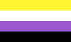
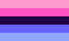
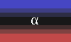
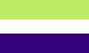
(ambiamorous flag by Kautr on Wikimedia Commons, neopronouns flag by UncleDanny on LGBTQIA+ Wiki)
i made the first four blinkies :-3
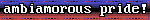
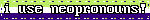
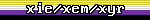
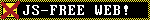
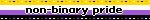
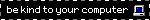
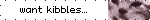
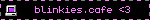
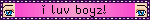
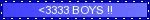


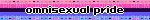
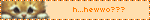


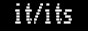
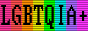

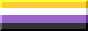

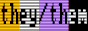
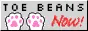